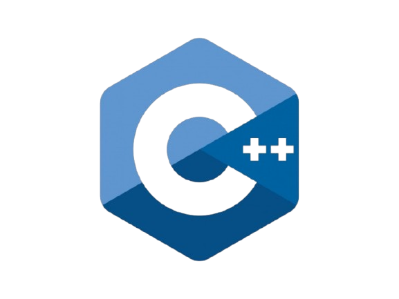
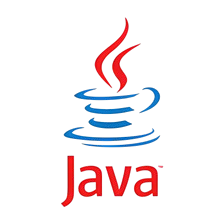
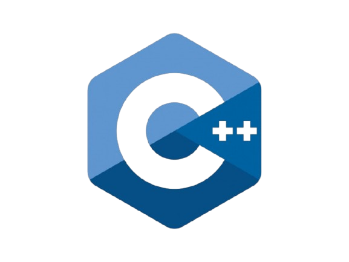
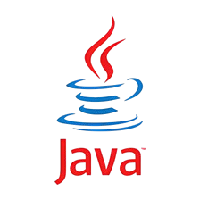
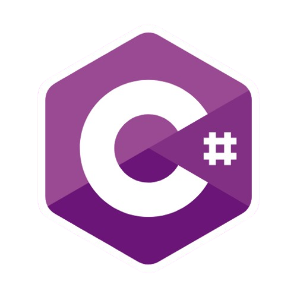
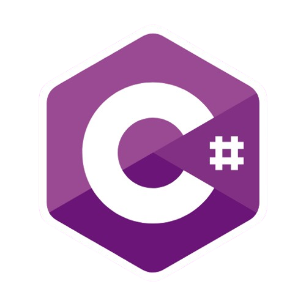

Los lenguajes de programación son herramientas fundamentales en el desarrollo de software. Permiten a los programadores escribir instrucciones que las computadoras pueden entender y ejecutar. Existen muchos lenguajes de programación, cada uno con sus propias características y propósitos. Algunos de los lenguajes más populares incluyen Python, Java, C, C++, C#, y JavaScript. Python es conocido por su sintaxis sencilla y su versatilidad, lo que lo convierte en una excelente opción para principiantes y expertos. Java es ampliamente utilizado en aplicaciones empresariales y móviles, mientras que C y C++ son lenguajes de bajo nivel que ofrecen un control preciso sobre el hardware. C# es un lenguaje desarrollado por Microsoft, ideal para el desarrollo de aplicaciones en la plataforma .NET. JavaScript es esencial para el desarrollo web, permitiendo la creación de interactividad en las páginas web. En resumen, los lenguajes de programación son herramientas poderosas que permiten a los desarrolladores crear software y aplicaciones que mejoran nuestra vida diaria. Cada lenguaje tiene sus propias ventajas y desventajas, y la elección del lenguaje adecuado depende del tipo de proyecto y de las preferencias del programador. En la actualidad, aprender a programar es una habilidad valiosa y demandada en el mercado laboral, y dominar varios lenguajes de programación puede abrir muchas puertas en el mundo de la tecnología.
 
